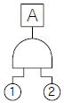
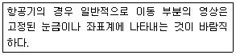
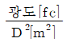
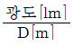
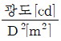
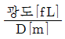
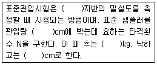
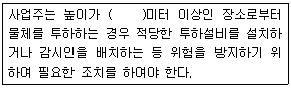

건설안전산업기사 (2013-09-28 기출문제)
1과목: 산업안전관리론
1. 안전심리의 5대 요소 중 능동적인 감각에 의한 자극에서 일어난 사고의 결과로서, 사람의 마음을 움직이는 원동력이 되는 것은?
- 기질(temper)
- 동기(motive)
- 감정(emotion)
- 습관(custom)
(정답률: 68%)

2. 다음 중 산업재해사례 연구순서에서 "사실의 확인"에 해당되지 않은 것은?
- 사람
- 물건
- 정보
- 관리
(정답률: 35%)
3. 다음 중 의무안전인증기준에 적합하며, 물체의 낙하 또는 비래 및 추락에 의한 위험을 방지 또는 경감하고, 머리 부위 감전에 의한 위험을 방지하기 위한 안전모의 종류에 해당하는 것은?
- A형
- AB형
- AE형
- ABE형
(정답률: 69%)
4. 다음 중 리더십 유형과 의사결정의 관계를 올바르게 연결한 것은?
- 개방적 리더 - 리더 중심
- 개성적 리더 - 종업원 중심
- 민주적 리더 - 전체집단 중심
- 독재적 리더 - 전체집단 중심
(정답률: 80%)
5. 다음 중 인간의 실수 및 과오의 직접적인 관계가 가장 먼 것은?
- 관리의 부적당
- 능력의 부족
- 주의의 부족
- 환경조건의 부적당
(정답률: 43%)
6. 다음 중 산업안전보건법상 안전검사 대상 유해ㆍ위험 기계에 해당하지 않는 것은?
- 연삭기
- 압력용기
- 곤돌라
- 롤러기
(정답률: 50%)
7. "무재해"란 무재해운동 시행사업장에서 근로자가 업무에 기인하여 사망 또는 며칠 이상의 요양을 요하는 부상 또는 질병에 이환되지 않는 것을 말하는가?
- 3일
- 4일
- 5일
- 7일
(정답률: 39%)
8. 다음 중 부주의의 현상과 가장 거리가 먼 것은?
- 의식의 단절
- 의식의 과잉
- 의식의 우회
- 의식의 회복
(정답률: 74%)
9. 다음 중 산업안전보건법상 산업안전보건위원회의 설치 대상에 관한 내용으로 틀린 것은?
- 상시 근로자 100명 이상을 사용하는 사업장
- 건설업의 경우 공사금액이 120억원 이상인 사업장
- 관련 법령에 따른 토목공사업에 해당하는 공사의 경우 공사금액이 150억원 이상인 사업장
- 상시 근로자 50명 미만을 사용하는 사업 중 다른 업종과 비교할 경우 근로자 수 대비 산업재해 발생 빈도가 현저히 높은 유해・위험 업종으로서 고용노동부령으로 정하는 사업장
(정답률: 49%)
10. 강도율이 1.5, 도수율이 2.0일 때 평균강도율은 얼마인가?
- 20
- 150
- 750
- 1333
(정답률: 39%)
11. 토의식 교육방법의 종류 중 새로운 자료나 교재를 제시하고 피교육자로 하여금 문제점을 제기하게 하거나 여러 가지 방법으로 의견을 발표하게 하고 청중과 토론자 간의 활발한 의견개진과 충돌로 합의를 도출해 내는 방법을 무엇이라 하는가?
- 포럼(forum)
- 심포지엄(symposium)
- 버즈 세션(buzz session)
- 케이스 메소드(case method)
(정답률: 54%)
12. 다음 중 매슬로우(Maslow)의 욕구단계이론에 관한 설명으로 틀린 것은?
- 욕구의 발생은 서로 중첩되어 나타난다.
- 각 단계의 욕구는 “만족 또는 충족 후 진행”의 성향을 갖는다.
- 대체적으로 인생이나 경력의 초기에는 사회적 욕구가 우세하게 나타난다.
- 궁극적으로는 자기의 잠재력을 최대한 발휘하여 하고 싶은 일을 실현하고자 한다.
(정답률: 51%)
13. 산업안전보건법령상 안전・보건표지의 종류에 있어 색채의 사용에서 기본 모형을 빨간색으로 해야 하는 것은?
- 고온 경고
- 방사성 물질 경고
- 인화성 물질 경고
- 레이저 광선 경고
(정답률: 66%)
14. 다음 중 위험예지훈련 4라운드의 진행방법에서 위험요인 발굴 및 합의와 결정을 하는 단계는?
- 본질추구
- 현상파악
- 대책수립
- 목표설정
(정답률: 51%)
15. 산업안전보건법령상 산업안전・보건 관련 교육과정 중 사업 내 안전・보건교육에 해당하지 않는 것은?
- 특별안전ㆍ보건교육
- 안전관리자 신규ㆍ보수 교육
- 관리감독자 정기안전ㆍ보건교육
- 채용 시의 교육 및 작업내용 변경 시의 교육
(정답률: 63%)
16. 다음 중 학습목적의 3요소에 해당하지 않는 것은?
- 주제
- 학습성과
- 학습정도
- 학습목표
(정답률: 57%)
17. 다음 중 교육의 요소에 있어 비형식적 교육의 주체로 볼 수 없는 것은?
- 강사
- 부모
- 선배
- 사회인사
(정답률: 67%)
18. 다음 중 불안전한 행동과 가장 관계가 적은 것은?
- 물건을 급히 운반하려다 부딪쳤다.
- 뛰어가다 넘어져 골절상을 입었다.
- 높은 장소에서 작업 중 부주의로 떨어졌다.
- 낮은 위치에 정지해 있는 호이스트의 고리에 머리를 다쳤다.
(정답률: 72%)
19. 다음 중 종업원의 안전에 관한 O.J.T 교육에 있어서 가장 중요한 역할을 담당하는 사람은?
- 경영자
- 직속상사
- 부서장
- 외부전문강사
(정답률: 74%)
20. 다음 중 재해의 뜻으로 가장 옳은 것은?
- 안전사고의 사건 그 자체를 말한다.
- 사고로 입은 인명의 상해만을 말한다.
- 생명과 재산을 보호하기 위한 제반활동을 말한다.
- 안전사고의 결과로 일어난 인명과 재산의 손실을 말한다.
(정답률: 76%)
2과목: 인간공학 및 시스템안전공학
21. FTA의 논리게이트 중에서 3개 이상의 입력사상 중 2개가 일어나면 출력이 나오는 것은?
- 억제 게이트
- 배타적 OR 게이트
- 조합 AND 게이트
- 우선적 AND 게이트
(정답률: 65%)
22. 다음 중 시스템 안전(system safety)에 관한 설명으로 가장 적절한 것은?
- 과학적ㆍ공학적 원리를 적용하여 시스템의 생산성을 극대화
- 시스템 구성의 각 요인을 어떻게 활용하면 시스템 전체가 시간ㆍ경제적으로 운영 가능
- 특히 사고나 질병으로부터 자기 자신 또는 타인을 안전하게 호신하는 것
- 어떤 시스템에서 기능, 시간, 코스트 등의 제약조건 하에서 인원, 설비의 상해, 손상 극소화
(정답률: 69%)
23. 동전던지기에서 앞면이 나올 확률이 0.2이고, 뒷면이 나올 확률이 0.8일 때, 앞면이 나올 확률의 정보량과 뒷면이 나올 확률의 정보량이 올바르게 연결된 것은?
- 앞면 : 2.32bit, 뒷면 : 1.32bit
- 앞면 : 2.32bit, 뒷면 : 0.32bit
- 앞면 : 3.32bit, 뒷면 : 0.32bit
- 앞면 : 3.32bit, 뒷면 : 1.52bit
(정답률: 66%)
24. 다음 중 정보를 전송하기 위해 표시장치를 선택하고자 할 때 시각장치보다 청각장치를 사용하는 것이 효과적인 경우로 옳은 것은?
- 정보의 내용이 복잡한 경우
- 수신자가 한 곳에 머물러 있는 경우
- 정보의 내용이 후에 재참조되는 경우
- 정보의 내용이 즉각적인 행동을 요구하는 경우
(정답률: 77%)
25. 다음 FT도에서 정상사상 A의 발생확률은? (단, 기본사상 ①, ②의 발생확률은 각각 1×10-3/h, 3×10-2/h 이다.)

- 3×10-5/h
- 4×10-5/h
- 3×10-6/h
- 4×10-6/h
(정답률: 60%)
26. 다음 중 생리적 스트레스를 전기적으로 측정하는 방법이 아닌 것은?
- EEG
- EMG
- GSR
- EPG
(정답률: 39%)
27. 다음 중 인간공학적으로 조종구(ball control)를 설계할때 고려하여야 할 사항이 아닌 것은?
- 마찰력
- 탄성력
- 중량감
- 관성력
(정답률: 53%)
28. 다음 중 결함수 분석기법(FTA)의 활용으로 인한 장점이 아닌 것은?
- 귀납적 전개가 가능
- 사고 원인 분석의 정량화
- 사고원인의 규명의 간편화
- 한 눈에 알기 쉽게 Tree 상으로 표현 가능
(정답률: 55%)
29. 항공기 위치 표시장치의 설계 제원칙에 있어 다음 설명에 해당하는 것은?

- 통합
- 표시의 현실성
- 추종표시
- 양립적 이동
(정답률: 65%)
30. 다음 중 FTA와 동일한 논리기법을 사용하여 관리, 설계, 생산, 보전 등의 광범위한 안전을 도모하기 위해 개발된 시스템 안전프로그램은?
- DT(Decision Tree)
- ETA(Event Tree Analysis)
- MORT(Management Oversight And Risk Tree)
- THERP(Technique For Human Error Rate Prediction)
(정답률: 68%)
31. 다음 중 점광원(point source)에서 표면에 비추는 조도 (lux)의 크기를 나타내는 식으로 옳은 것은? (단, D는 광원으로부터의 거리를 말한다.)




(정답률: 69%)
32. 다음 중 시스템의 수명곡선에서 고장의 발생형태가 일정하게 나타나는 기간은?
- 초기고장기간
- 우발고장기간
- 마모고장기간
- 피로고장기간
(정답률: 53%)
33. 다음 중 위험조정을 위해 필요한 방법으로 틀린 것은?
- 보류(retention)
- 위험 감축(reduction)
- 위험 회피(avoidance)
- 위험 확인(confirmation)
(정답률: 57%)
34. 자연습구온도가 20℃이고, 흑구온도가 30℃일 때, 실내의 습구흑구온도지수(WBGT: Wet Bulb Globe Temperature)는 약 얼마인가?
- 20℃
- 23℃
- 25℃
- 30℃
(정답률: 63%)
35. 다음 중 인간에러 원인의 수준적 분류에 있어 작업자 자신으로부터 발생하는 에러를 무엇이라 하는가?
- Command error
- Secondary error
- Primary error
- Third error
(정답률: 65%)
36. 다음 중 현장에서 인간공학의 적용분야로 가장 거리가 먼 것은?
- 설비 관리
- 제품 설계
- 재해・질병 예방
- 장비・공구・설비의 설계
(정답률: 40%)
37. 다음 중 선 자세 작업이 앉은 자세 작업보다 좋은 경우가 아닌 것은?
- 신체적 안정감이 필요한 경우
- 작업자들이 자주 이동하는 경우
- 손으로 큰 힘을 써서 작업하는 경우
- 매우 크거나 무거운 중량물을 취급하는 경우
(정답률: 70%)
38. 다음 중 집단으로부터 얻은 자료를 선택하여 사용할 때에 특정한 설계 문제에 따라 대상 자료를 선택하는 인체계측 자료의 응용 원칙 3가지와 거리가 먼 것은?
- 조절범위 설계
- 사용빈도에 따른 설계
- 평균치를 기준으로 한 설계
- 극단치를 속한 사람을 위한 설계
(정답률: 49%)
39. 다음 중 체계분석 및 설계에 있어서 인간공학의 가치와 가장 거리가 먼 것은?
- 성능의 향상
- 인력 이용률의 감소
- 사용자의 수용도 향상
- 사고 및 오용으로부터의 손실 감소
(정답률: 77%)
40. 다음 중 앉은 사람의 신체부위에 따른 공명진동수(Hz)가 바르게 표현된 것은?
- 3 ~ 4Hz일 때 경부골(목)의 공명
- 10 ~ 15Hz일 때 안구(눈)의 공명
- 20 ~ 50Hz일 때 요추골(상체)의 공명
- 40 ~ 50Hz일 때 견대(어깨)의 공명
(정답률: 38%)
3과목: 건설시공학
41. 경량골재콘크리트 공사에 관한 사항으로 옳지 않은 것은?
- 슬럼프값은 180mm 이하로 한다.
- 경량골재는 배합 전 완전히 건조시켜야 한다.
- 보와 바닥판의 콘크리트는 벽이나 기둥의 콘크리트가 충분히 안정된 후에 부어 넣어야 한다.
- 물-시멘트의 최대값은 60%로 한다.
(정답률: 66%)
42. 다음 중 철골공사의 용접결함이 아닌 것은?
- 오버랩
- 언더컷
- 블로홀
- 비드
(정답률: 82%)
43. 철골공사에서 현장 용접부 검사 중 용접전 검사가 아닌 것은?
- 비파괴 검사
- 개선 정도 검사
- 개선면의 오염 검사
- 가부착 상태 검사
(정답률: 79%)
44. 흙막이공사 중 지하연속벽공법의 특징이 아닌 것은?
- 차수성이 높다.
- 타 공법에 비하여 공기, 공사비 면에서 불리하다.
- 시공 중 주위지반에 지장이 없다.
- 진동, 소음이 크다.
(정답률: 63%)
45. 다음 ( )속에 들어갈 내용을 순서대로 연결한 것은?

- 점토질 - 20 - 43.5 - 36
- 사질 - 20 - 43.5 - 36
- 사질 - 30 - 63.5 - 76
- 점토질 - 30 - 63.5 - 76
(정답률: 62%)
46. 무량판 구조 또는 평판구조에서 2방향 장선 구조가 가능토록 제작된 시스템 거푸집은?
- 플라잉폼(Flying Form)
- 슬라이딩폼(Sliding Form)
- 와플폼(waffle Form)
- 터널폼(Tunnel Form)
(정답률: 64%)
47. 다음 중 지내력시험에 대한 설명으로 옳은 것은?
- 재하판의 크기는 75cm×75cm의 정방형 판을 사용한다.
- 단기허용지내력도는 총 침하량이 2mm에 달했을 때까지의 하중을 적용한다.
- 장기하중에 대한 허용지내력은 단기하중 허용지내력의 1/2이다.
- 매 회의 재하는 5ton 이하 또는 예정파괴하중의 1/5이하로 한다.
(정답률: 51%)
48. 철골구조에서 최상층으로부터 4개 층에 해당하는 바닥의 내화요구시간 기준은?
- 30분
- 1시간
- 1시간30분
- 2시간
(정답률: 54%)
49. 기존 건축물의 기초지점을 보강 또는 그곳에 새로운 기초를 삽입하거나, 지지면을 더 깊은 지반에 옮기는 공법은?
- 언더피닝 공법(under pinning method)
- 소일콘크리트 공법(soil concrete method)
- 웰포인트 공법(wellpoint method)
- 아일랜드 공법(island method)
(정답률: 76%)
50. 수밀 콘크리트 제작 방법에 관한 사항 중 옳지 않은 것은?
- 틈새가 없는 질이 우수한 거푸집을 사용한다.
- 가급적 물・시멘트 비를 크게 한다.
- 이음치기를 하지 않는 것이 좋다.
- 양생을 충분히 하는 것이 좋다.
(정답률: 79%)
51. 콘크리트의 압축강도를 측정하기 위한 비파괴시험 방법으로서 가장 일반적으로 사용되고 있는 방법은?
- 슈미트해머 시험
- 비비 시험
- 코어 시험
- 초음파 탐상시험
(정답률: 65%)
52. 철골공사에서 기둥 축소량(Column Shortening)에 대한 설명으로 옳지 않은 것은?
- 방지대책으로 전체 건물의 층을 몇 절로 등분하여 변위 차이를 최소화한다.
- 철골기둥의 높이 증가와 하중의 증가로 인해 수직하중이 증대되어 발생되는 기둥의 수축량이다.
- 기둥축소에 따른 영향으로 슬래브, 보와 같은 수평부재의 초기 위치가 변화된다.
- 방지대책으로 가조립 후 곧바로 본조립을 실시한다.
(정답률: 66%)
53. 다음 중 경량콘크리트의 특징이 아닌 것은?
- 자중이 적고 건물중량이 경감된다.
- 강도가 작다.
- 건조수축이 적다.
- 내화성이 크고 열전도율이 적으며 방음효과가 크다.
(정답률: 38%)
54. 자갈 지정에 관한 설명 중 옳지 않은 것은?
- 자갈을 깔고 난 후 바이브로 래머 등으로 다진다.
- 연약한 점토 지반에서 사용되는 공법이다.
- 지정은 두께 5~10cm 정도로 자갈깔기를 한다.
- 잘 다진 자갈위에 밑창 콘크리트를 타설한다.
(정답률: 58%)
55. 도급계약서에 첨부하지 않아도 되는 서류는?
- 설계도면
- 시방서
- 시공계획서
- 현장설명서
(정답률: 58%)
56. 철골부재 양중장비 중 고층건물에 가장 적합한 것은?
- 가이데릭(Guy Derrick)
- 타워크레인(Tower Crane)
- 트럭크레인(Truck Crane)
- 진폴(Gin Pole)
(정답률: 87%)
57. 모르타르 혹은 콘크리트를 호스를 사용하여 압축공기로 시공면에 뿜는 공법은?
- 프리팩트공법
- 진공탈수공법
- 숏크리트공법
- 슬립폼공법
(정답률: 61%)
58. 철근의 일반적인 정착위치에 관한 설명 중 옳지 않은 것은?
- 지중보 철근은 기초, 기둥에 정착한다.
- 기둥하부 철근은 큰 보, 작은 보에 정착한다.
- 벽철근은 기둥, 보, 바닥판에 정착한다.
- 바닥철근은 보, 벽체에 정착한다.
(정답률: 49%)
59. 굳지 않은 콘크리트의 물성 중 반죽질기의 측정방법으로 볼 수 없는 것은?
- 슬럼프 시험
- 다짐계수 시험
- 전기전도도 시험
- 비비 시험
(정답률: 71%)
60. 초고층 건물의 콘크리트 타설시 가장 많이 이용되고 있는 방식은?
- 자유낙하에 의한 방식
- 피스톤으로 압송하는 방식
- 튜브속의 콘크리트를 짜내는 방식
- 물의 압력에 의한 방식
(정답률: 88%)
4과목: 건설재료학
61. 시멘트의 분말도가 높을수록 생기는 특성이 아닌 것은?
- 수화 작용이 빠르고 수밀성이 크다.
- 균열 발생도가 낮다.
- 블리딩이 적어진다.
- 초기 강도의 발생이 빠르며 강도 증진율이 높다.
(정답률: 56%)
62. 돌로마이트 플라스터에 대한 설명으로 옳지 않은 것은?
- 풀이 필요하지 않아 변색, 냄새, 곰팡이가 없다.
- 소석회에 비해 점성이 낮으며, 약산성이므로 유성페인트 마감을 할 수 있다.
- 응결시간이 길다.
- 회반죽에 비하여 조기강도 및 최종강도가 크다.
(정답률: 59%)
63. 회반죽 바름 시 사용하는 해초풀은 채취 후 1~2년 경과된 것이 좋은데 그 이유는 무엇인가?
- 점도가 높기 때문이다.
- 알칼리도가 높기 때문이다.
- 색상이 우수하기 때문이다.
- 염분제거가 쉽기 때문이다.
(정답률: 69%)
64. 내화벽돌에서 S.K 29, 33, 42 등의 번호는 구체적으로 무엇을 나타내는가?
- 소성 점토의 성분 표시
- 제품 종류의 표시
- 내화도의 표시
- 흡수도의 표시
(정답률: 64%)
65. 목재 및 기타 식물의 섬유질 소편에 합성수지접착제를 도포하여 가열압착성형한 판상제품은?
- 합판
- 파티클보드
- 집성목재
- 파키트리보드
(정답률: 63%)
66. 다음 중 구리(Cu)와 주석(Sn)을 주체로 한 합금으로 주조성이 우수하고 내식성이 크며 건축장식철물 또는 미술공예재료에 사용되는 것은?
- 청동
- 황동
- 양백
- 두랄루민
(정답률: 84%)
67. 강의 탄소함유량이 증가함에 따른 성질 변화에 관한 설명으로 옳지 않은 것은?
- 경도가 높아진다.
- 인성이 낮아진다.
- 연성이 낮아진다.
- 용접성이 좋아진다.
(정답률: 61%)
68. 점토소성제품의 흡수성이 큰 순서대로 올바르게 나열된 것은?
- 토기 ＞ 도기 ＞ 석기 ＞ 자기
- 토기 ＞ 도기 ＞ 자기 ＞ 석기
- 도기 ＞ 토기 ＞ 석기 ＞ 자기
- 도기 ＞ 토기 ＞ 자기 ＞ 석기
(정답률: 85%)
69. 플라스틱 재료의 일반적인 성질에 대한 설명으로 옳지 않은 것은?
- 플라스틱의 강도는 목재보다 크며 인장강도가 압축 강도보다 매우 크다.
- 플라스틱은 상호간 접착이 잘되며, 금속, 콘크리트, 목재, 유리 등 다른 재료에도 부착이 잘된다.
- 플라스틱은 일반적으로 전기절연성이 양호하다.
- 플라스틱은 열에 의한 팽창 및 수축이 크다.
(정답률: 68%)
70. 시멘트가 공기 중의 수분을 흡수하여 일어나는 수화작용을 의미하는 용어는?
- 풍화
- 경화
- 수축
- 응결
(정답률: 48%)
71. 다음 중 상수면 이하에 박은 기초말뚝의 예처럼 목재를 수중에 완전 침수하는 목적으로 가장 적절한 것은?
- 부패를 방지하기 위해
- 가공을 용이하게 하기 위해
- 강도를 증가시키기 위해
- 내화성을 높이기 위해
(정답률: 68%)
72. 감람석이 변질된 것으로 암녹색 바탕에 아름다운 무늬를 갖고 있으나 풍화성이 있어 실내장식용으로 사용되는 것은?
- 현무암
- 사문암
- 안산암
- 응회암
(정답률: 59%)
73. 다음 중 석재의 용도로 옳지 않은 것은?
- 화강석 - 외장재
- 대리석 - 내장재
- 점판암 - 구조재
- 석회암 - 콘크리트원료
(정답률: 65%)
74. 건설용 재료로서 콘크리트가 가지는 장점이 아닌 것은?
- 압축강도와 인장강도가 모두 크다.
- 내구성 및 내화성이 좋다.
- 자유로운 형태를 구현할 수 있다.
- 재료의 확보가 용이하다.
(정답률: 65%)
75. 다음 중 염화비닐수지의 용도로 가장 적합하지 않은 것은?
- 파이프
- 타일
- 도료
- 유리 대용품
(정답률: 56%)
76. 대리석을 붙이기 할 때 사용되는 모르타르로 가장 적합한 것은?
- 시멘트 모르타르
- 방수 모르타르
- 석고 모르타르
- 석회 모르타르
(정답률: 67%)
77. 목재의 유용성 방부제로서 무색제품이며 방부제 위에 페인트칠도 가능한 것은?
- 크레오소트오일
- P.C.P
- 아스팔트
- 콜타르
(정답률: 53%)
78. 중용열 포틀랜드시멘트의 일반적인 특징 중 옳지 않은 것은?
- 수화발열량이 적다.
- 초기강도가 크다.
- 건조수축이 적다.
- 내구성이 우수하다.
(정답률: 58%)
79. 다음 미장재료 중 기경성 재료가 아닌 것은?
- 소석회
- 경석고 플라스터
- 돌로마이트 플라스터
- 석회크림
(정답률: 57%)
80. 목재의 가공제품인 MDF에 대한 설명으로 옳지 않은 것은?
- 샌드위치 판넬이나 파티클 보드 등 보드류 제품에 비해 매우 경량이다.
- 습기에 약한 결점이 있다.
- 다른 보드류에 비하여 곡면가공이 용이하다.
- 가공성 및 접착성이 우수하여 깔끔한 마감에 사용된다.
(정답률: 66%)
5과목: 건설안전기술
81. 잠함 등의 내부에서 굴착작업을 할 때의 준수사항으로 옳지 않은 것은?
- 산소결핍 우려가 있는 경우에는 산소의 농도를 측정하는 사람을 지명하여 측정하도록 할 것
- 근로자가 안전하게 오르내리기 위한 설비를 설치할 것
- 굴착깊이가 20m를 초과하는 경우에는 해당 작업장소와 외부와의 연락을 위한 통신설비 등을 설치할 것
- 바닥으로부터 천장 또는 보까지의 높이는 3m 이내로 할 것
(정답률: 66%)
82. 건설공사 착공 시 유해ㆍ위험방지계획서 제출대상 사업규모에 해당되지 않는 것은?
- 터널건설 공사
- 깊이가 15m인 굴착공사
- 지상높이가 25m인 건축물 건설 공사
- 최대지간길이가 55m인 교량건설 공사
(정답률: 66%)
83. 흙의 다짐에 대한 목적 및 효과로 옳지 않은 것은?
- 흙의 밀도가 높아진다.
- 흙의 투수성이 증가한다.
- 지반의 지지력이 증가한다.
- 동상현상이나 팽창작용 등이 감소한다.
(정답률: 67%)
84. 강관비계를 설치할 때 첫 번째 띠장의 높이는 지상으로 부터 얼마 이하의 위치에 설치하여야 하는가?
- 1.5m 이하
- 2m 이하
- 3m 이하
- 4m 이하
(정답률: 67%)
85. 지반의 투수계수에 영향을 주는 인자에 해당하지 않는 것은?
- 유체의 점성계수
- 토립자의 단위중량
- 토립자의 공극비
- 유체의 밀도
(정답률: 52%)
86. 다음 ( )안에 알맞은 숫자는?

- 2
- 3
- 5
- 10
(정답률: 53%)
87. 보 또는 슬래브의 거푸집 작업 시 주의 사항이 아닌 것은?
- 모서리는 정확하게 조립되어야 한다.
- 하부에 청소구가 있는가를 확인한다.
- 중앙부는 약간의 솟음을 두어야 한다.
- 벌어짐에 견딜 수 있도록 견고해야 한다.
(정답률: 64%)
88. 철골구조물의 구조안전과 관련하여 건립 중 강풍에 의한 풍압 등 외압에 대한 내력이 설계에 고려되었는지 확인하여야 하는 구조물에 해당되지 않는 것은?
- 연면적당 철골량 70kg/m2 인 구조물
- 이음부가 현장용접인 구조물
- 높이 30m인 구조물
- 구조물의 폭과 높이의 비가 1:4 인 구조물
(정답률: 47%)
89. 철골 작업 시 강우량에 대해 작업을 중단하는 기준은?
- 시간당 1mm 이상인 경우
- 시간당 5mm 이상인 경우
- 시간당 10mm 이상인 경우
- 시간당 15mm 이상인 경우
(정답률: 77%)
90. 가설 통로 중 경사로의 설치 기준으로 옳지 않은 것은?
- 경사로의 폭은 최소 90cm 이상이어야 한다.
- 발판 폭은 40cm 이상으로 하고, 틈은 3cm 이내로 설치하여야 한다.
- 비탈면의 경사각은 30° 이내이어야 한다.
- 경사로의 지지 기둥은 5m 이내마다 설치하여야 한다.
(정답률: 39%)
91. 건설현장에서 사용하는 단관비계 결속재의 종류가 아닌 것은?
- 고정형 클램프
- 잭 베이스
- 자유형 클램프
- 특수형 클램프
(정답률: 71%)
92. 안전방망을 건축물의 바깥쪽으로 설치하는 경우 벽면으로부터 망의 내민길이는 최소 얼마 이상이어야 하는가?
- 2m
- 3m
- 5m
- 10m
(정답률: 50%)
93. 터널 작업 시 터널 지보공은 조립하거나 변경하는 경우의 조치사항으로 옳지 않은 것은?
- 주재(主材)를 구성하는 1세트의 부재는 동일 평면내에 배치할 것
- 목재의 터널 지보공은 그 터널 지보공의 각 부재의 긴압 정도가 위치에 따라 차이나도록 할 것
- 강(鋼)아치 지보공의 조립에서 낙하물이 근로자에게 위험을 미칠 우려가 있는 경우에는 널판 등을 설치할 것
- 기둥에는 침하를 방지하기 위하여 받침목을 사용하는 등의 조치를 할 것
(정답률: 65%)
94. 콘크리트 타설작업을 하는 경우에 준수해야 할 사항으로 옳지 않은 것은?
- 당일의 작업을 시작하기 전에 해당 작업에 관한 거푸집 동바리 등의 변형ㆍ변위 및 지반의 침하 유무 등을 점검하고 이상이 있으면 보수할 것
- 작업 중에는 거푸집동바리 등의 변형ㆍ변위 및 침하 유무 등을 감시할 수 있는 감시자를 배치하여 이상이 있으면 작업을 중지하고 근로자를 대피시킬 것
- 콘크리트 타설작업 시 거푸집 붕괴의 위험이 발생할 우려가 있으면 충분한 보강조치를 할 것
- 콘크리트를 타설하는 경우에는 밀실한 충전을 위해 최대한 편심이 발생하도록 집중하여 타설할 것
(정답률: 81%)
95. 기계운반하역 시 걸이 작업의 준수사항으로 옳지 않은 것은?
- 와이어로프 등은 크레인이 후크 중심에 걸어야 한다.
- 인양 물체의 안정을 위하여 2줄 걸이 이상을 사용하여야 한다.
- 매다는 각도는 70° 정도로 한다.
- 근로자를 매달린 물체위에 탑승시키지 않아야 한다.
(정답률: 72%)
96. 산업안전보건기준에 관한 규칙에 따른 풍화암 지반의 굴착면 기울기 기준으로 옳은 것은?(2021년 11월 19일 개정된 규정 적용됨)
- 1 : 0.5
- 1 : 0.8
- 1 : 1.0
- 1 : 1.5
(정답률: 68%)
97. 거푸집 존치기간의 결정요인과 가장 거리가 먼 것은?
- 시멘트의 종류
- 골재의 입도
- 하중
- 평균 기온
(정답률: 56%)
98. 건설작업용 리프트에 대하여 강풍이 불어올 우려가 있는때에는 붕괴 방지를 하기 위한 조치를 하여야 하는데 이때의 순간풍속 기준으로 옳은 것은?
- 매 초당 25m를 초과
- 매 초당 30m를 초과
- 매 초당 35m를 초과
- 매 초당 40m를 초과
(정답률: 61%)
99. 산업안전보건기준에 관한 규칙에 따른 추락에 의한 위험 방지와 관련된 다음 ( )안에 들어갈 내용으로 옳은 것은?
- 2m
- 3m
- 4m
- 5m
(정답률: 59%)
100. 사다리식 통로를 설치하는 경우에 준수하여야 하는 사항으로 옳지 않은 것은?
- 발판과 벽과의 사이는 10cm 이하의 간격을 유지할 것
- 사다리가 넘어지거나 미끄러지는 것을 방지하기 위한 조치를 할 것
- 사다리의 상단은 걸쳐놓은 지점으로부터 60cm 이상 올라가도록 할 것
- 사다리식 통로의 길이가 10m 이상인 경우에는 5m 이내마다 계단참을 설치할 것
(정답률: 57%)